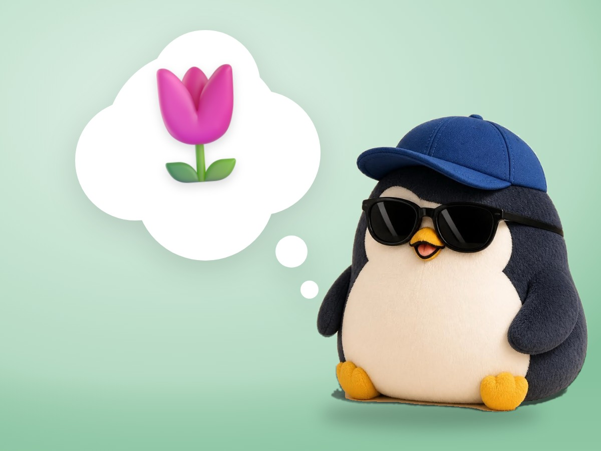

📝 DRAFT · 下書き — まだ本番に出していません · 下書き一覧
🐧 EVERYDAY LIFE⚡ 18 SEC
Your real life does not start after the chores, because it already started 🌷

Someday Thinking
Do you think, "When these chores are done, my real life will start"?
Chores Return
But even when you finish the chores, new ones come again and again.
⚡ TRY IT
Can you reach the gate of real life?
Finish the chores first… then real life starts. Right?
Real life →
🧺 Laundry
🍽️ Dishes
📧 Emails
🧾 Bills
🧹 Cleaning
🛒 Shopping
📦 Returns
🪴 Water the plants
📱 App updates
✅ Chores done: 0 · 📏 Gate: 10 m away
Tap ✅ to finish the chores.
New chores came! The gate moved further away. 😮
The chores never end… Maybe try the other button? 👀
There was no gate. You were already in real life. 🌷
No Such Day
Oliver Burkeman says that the day your "real life starts" will never come. I am a perfectionist, so this really hit me.
Already Here
Your real life has already started.
📚 I learned this from Oliver Burkeman's newsletter. Read the original (English)